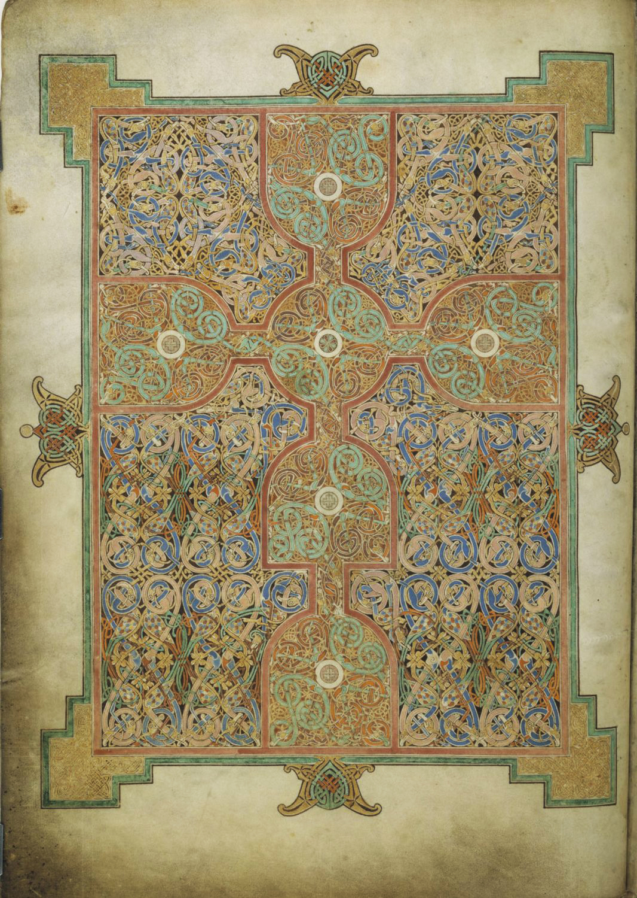

AUTHENTIC MANUSCRIPT FACSIMILE · PUBLIC DOMAIN
THE LINDISFARNE GOSPELS
Around AD 700, a gospel book was painstakingly illuminated on vellum. The cross-carpet folio 26v is real. Centuries later, Old English interlinear glosses were added to this manuscript. Separate original creation from later acts of interpretation.
INSPECT THE RECORD
Does the manuscript tell one story—or the history of many hands?
British Library, Cotton MS Nero D IV, fol. 26v; Wikimedia Commons File:F26v.jpg; public domain.
OPEN ORIGINAL DOCUMENTATION ↗